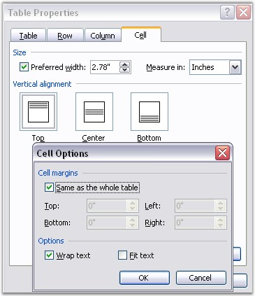

WTableCell class represents a table cell in the Word document. WTextBody is the base class of WTableCell, which means that WTableCell object can hold paragraphs. You can format the table cell by using the CellFormat property. This property returns the value of the CellFormat type.
The following screen shot illustrates how to set the Cell Format in MS Word.

Figure 39: Cell Format Options in Table Properties Dialog Box
Cell Format Public Properties
|
Name |
Description |
|
BackColor |
Gets or sets background color. |
|
Borders |
Gets borders. |
|
FitText |
Gets or sets fit text option. |
|
HorizontalMerge |
Gets or sets the way of horizontal merging of the cell. |
|
Paddings |
Gets paddings. |
|
TextDirection |
Gets or sets cell text direction. |
|
TextWrap |
Gets or sets a value indicating whether [text wrap]. |
|
VerticalAlignment |
Gets or sets vertical alignment. |
|
VerticalMerge |
Gets or sets the way of vertical merging of the cell. |
Public Constructor
|
Name |
Description |
|
WTableCell.WTableCell (IWordDocument) |
Initializes a new instance of the WTableCell class. |
Public Properties
|
Name |
Description |
|
CellFormat |
Gets cell format. |
|
EntityType |
Gets the type of the entity. |
|
OwnerRow |
Gets owner row of the cell. |
|
Width |
Gets or sets the cell width (in points). |
Public Methods
|
Name |
Description |
|
Clone |
Clones this instance. |
|
GetCellIndex |
Get cell index in the table row. |
The following example illustrates how to create a table with non-default formatting.
|
[C#]
paragraph = section.AddParagraph(); paragraph.AppendText("Table with different formatting"); paragraph = section.AddParagraph();
//Add a table table = section.AddTable();
//Set number of rows and columns table.ResetCells(3, 3); table.TableFormat.Borders.LineWidth = 2f; table.TableFormat.Borders.Color = Color.Green;
//Select the first row and append text in each cell WTableRow row0 = table.Rows[0]; row0.Cells[0].AddParagraph().AppendText("1"); row0.Cells[0].CellFormat.Borders.LineWidth = 2f; row0.Cells[0].CellFormat.Borders.Color = Color.Magenta;
WTableRow row = table.Rows[0]; row0.Cells[1].AddParagraph().AppendText("2"); row0.Cells[2].AddParagraph().AppendText("3");
WTableRow row1 = table.Rows[1]; row = table.Rows[1]; row1.Cells[0].AddParagraph().AppendText("4"); row1.Cells[1].AddParagraph().AppendText("5"); row1.Cells[1].CellFormat.Borders.LineWidth = 2f; row1.Cells[1].CellFormat.Borders.Color = Color.Brown;
row1.Cells[2].AddParagraph().AppendText("6"); WTableRow row2 = table.Rows[2]; row2.Cells[0].AddParagraph().AppendText("7"); row2.Cells[1].AddParagraph().AppendText("8"); row2.Cells[2].AddParagraph().AppendText("9"); row2.Cells[2].CellFormat.Borders.LineWidth = 2f; row2.Cells[2].CellFormat.Borders.Color = Color.Cyan; row2.Cells[2].CellFormat.Borders.Shadow = true; |
|
[VB.NET]
paragraph = section.AddParagraph() paragraph.AppendText("Table with different formatting") paragraph = section.AddParagraph()
'Add a table table = section.AddTable()
'Set number of rows and columns table.ResetCells(3, 3) table.TableFormat.Borders.LineWidth = 2f table.TableFormat.Borders.Color = Color.Green
'Select the first row and append text in each cell Dim row0 As WTableRow = table.Rows(0) row0.Cells(0).AddParagraph().AppendText("1") row0.Cells(0).CellFormat.Borders.LineWidth = 2f row0.Cells(0).CellFormat.Borders.Color = Color.Magenta
Dim row As WTableRow = table.Rows(0) row0.Cells(1).AddParagraph().AppendText("2") row0.Cells(2).AddParagraph().AppendText("3")
Dim row1 As WTableRow = table.Rows(1) row = table.Rows(1) row1.Cells(0).AddParagraph().AppendText("4") row1.Cells(1).AddParagraph().AppendText("5") row1.Cells(1).CellFormat.Borders.LineWidth = 2f row1.Cells(1).CellFormat.Borders.Color = Color.Brown
row1.Cells(2).AddParagraph().AppendText("6") Dim row2 As WTableRow = table.Rows(2) row2.Cells(0).AddParagraph().AppendText("7") row2.Cells(1).AddParagraph().AppendText("8") row2.Cells(2).AddParagraph().AppendText("9") row2.Cells(2).CellFormat.Borders.LineWidth = 2f row2.Cells(2).CellFormat.Borders.Color = Color.Cyan row2.Cells(2).CellFormat.Borders.Shadow = True |
Cell Content Formatting
The AddParagraph method of the WTableCell class is used to add paragraphs to the table cell. The TextRange property of this method is used to format the contents of the cell. For details, see Text Range.
|
[C#]
// Adding a new Table to the text body. IWTable table = sec.body.AddTable();
// Inserting rows to the table. This will apply the format to whole table. table.ResetCells(6, 6, format, 80); WTableCell cell = table.Rows[0].Cells[0] as WTableCell; WTextRange range = cell.AddParagraph().AppendText("aaaaaaaaaaaaaaaaaaaa") as WTextRange ;
//Format first cell first paragraph. range.CharacterFormat.FontName = "Arial"; range.CharacterFormat.FontSize = 10;
// Format first cell second paragraph. range = cell.AddParagraph().AppendText("bbbbbbbbbbbbbbbbbbb") as WTextRange; range.CharacterFormat.Italic = true; range.CharacterFormat.FontSize = 12; |
|
[C#]
' Adding a new Table to the text body. Dim table As IWTable = sec.body.AddTable()
' Inserting rows to the table. This will apply the format to whole table. table.ResetCells(6, 6, Format, 80) Dim cell As WTableCell = TryCast(table.Rows(0).Cells(0), WTableCell) Dim range As WTextRange = TryCast(cell.AddParagraph().AppendText("aaaaaaaaaaaaaaaaaaaa"), WTextRange)
'Format first cell first paragraph. range.CharacterFormat.FontName = "Arial" range.CharacterFormat.FontSize = 10
' Format first cell second paragraph. range = TryCast(cell.AddParagraph().AppendText("bbbbbbbbbbbbbbbbbbb"), WTextRange) range.CharacterFormat.Italic = True range.CharacterFormat.FontSize = 12 |